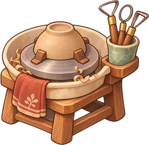
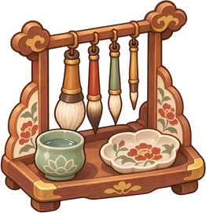
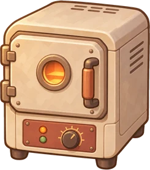
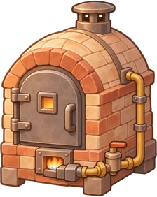

상점
{{goldText}}
{{tb.label}}

굽깎이대
2차 성형 해금
형태 보정 · 무늬
{{trimLabel}}

붓 · 시유대
{{brushReq}}
{{brushLabel}}

전기가마 3×3
온도 분포 등장
배치 퍼즐 시작
12,000

가스가마
명성 Lv.6
현재 3
연구 환원소성
보러 가기
45,000G
부족
{{m.name}}
보유 {{m.own}}
{{m.desc}}
{{m.price}}
{{d.name}}
{{d.effect}}
{{d.label}}
{{toast}}
공방
연구
제작
의뢰
상점
 {{goldText}}
{{goldText}}